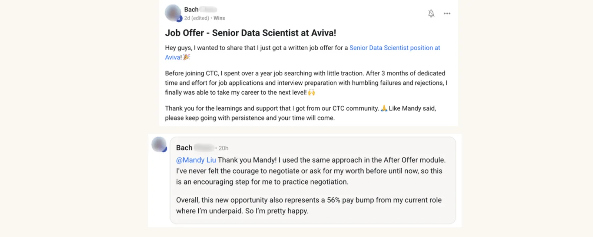

Client story: Bach · +57% pay
From Stuck and Underpaid to Senior & a 57% Pay Jump: How Bach Broke Career Stagnation in 3 Months
Bach’s challenges
- Stuck on his job for 5 years - underpaid and no promotion path
- Applied for over a year with only 3 calls and zero offer
- Demotivated by technical screen difficulty and lost self-esteem due to the long haul
What we focused on
- Revamped his resume for crystal clarity and tailored impact
- Interview preparation through modules on ML, A/B testing, statistics, and behavioral questions
- Empowered him to negotiate for the first time
Results
- Landed a 130K Senior Data Scientist role - a 57% pay increase
- Negotiated successfully for the first time
- Doubled interview conversion rate
